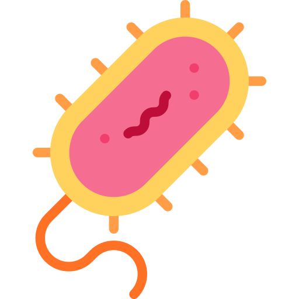
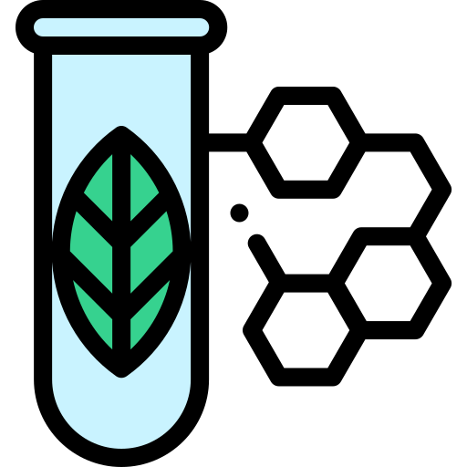

Face au changement climatique, menaçant l'équilibre des milieux aquatique côtiers, il est nécessaire de disposer d'outils de diagnostic pour évaluer l'état du fonctionnement écologique de ces milieux. Ces outils apporteront une aide pour la prise de décision dans la portection et la gestion des zones côtières et de la préservation de leur biodiversité. Le projet BIOMIC a pour objectif de développer une boîte à outils de bioindicateurs microbiens et trophique de l'état écologique des zones côtières du SUDOE.

Identification des bioindicateurs microbiens de la zone SUDOE

Identification de l'état trophique de la colonne d'eau dans la zone côtière SUDOE
Ecologie expérimentale et validation de l'outil de bioindicateurs sur les sites de la zone SUDOE
Partenaires
Budget FEDER
Axe prioritaire 1